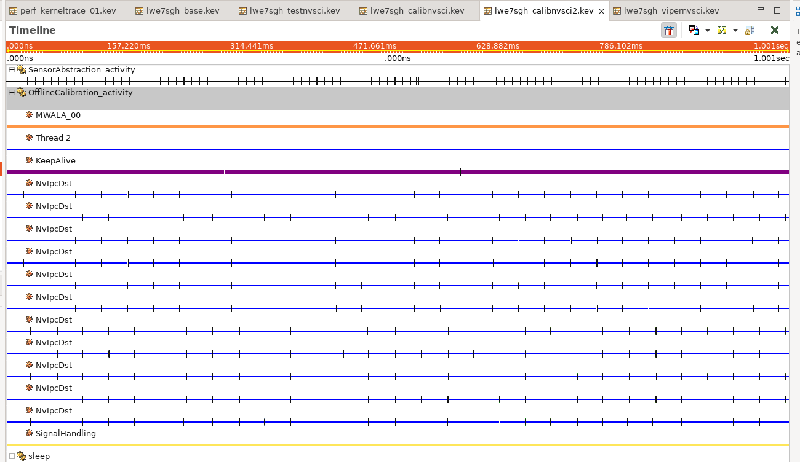
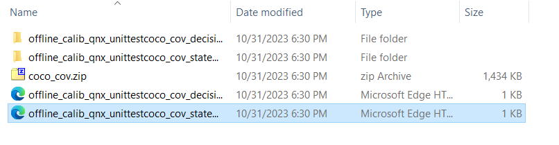
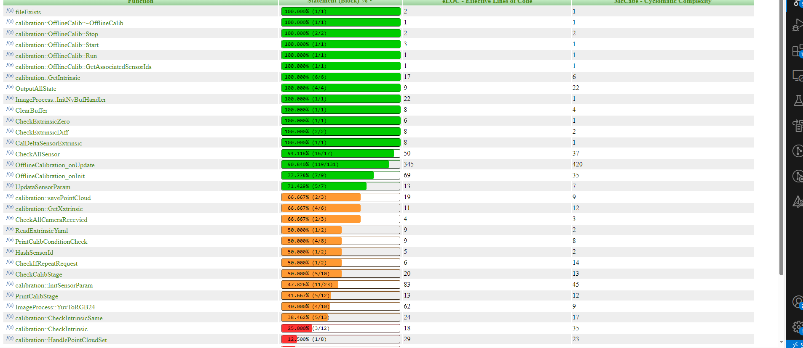
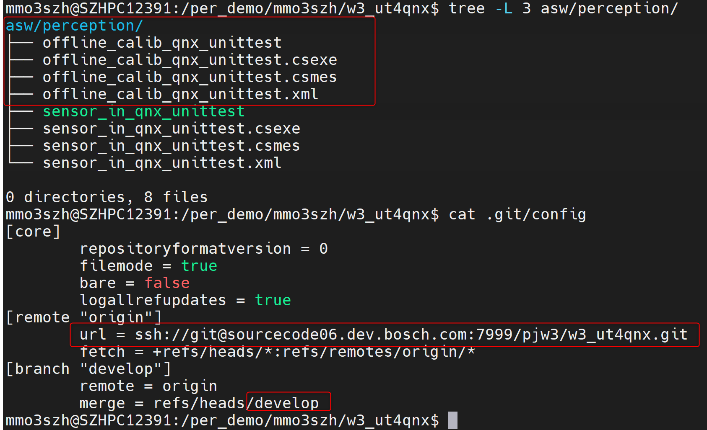
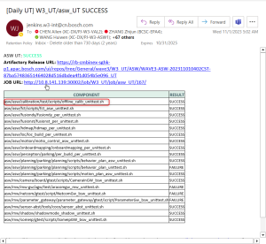

calib UT
Note that you need to turn off VM_STATE during UT test Otherwise, it is impossible to call the initialization API due to VM State
Real car VM problem check -Wave 3 Development -DOCUPEDIA (bosch.com)
background
When the Calib program is used, the relevant library of NVSCI is called. In the normal code logic, this code is implemented by MW HWA and packaged in YAAC automatically. The Camera Gateway data is collected through the IPC communication of NVSCI., And it is a blocking initialization, so when the interface/AOS version is not matched, there will be a cardless phenomenon without LOG/COREDUMP

NVIPCDST is a blocking IPC thread that can replace the library file provided by the following NV to implement the naming of the thread.
Limitation 1: The existing Chery tablet is scarce and the current Camera Gateway is given to Calib a Gateway with strong coupling with ROUDI. The actual calibration is a single picture, which can be obtained directly from the file system.
So when doing unit tests, onupdate and oninit need to run on the board. At the same time, only the Camera Gateway of the push -flowing function is required to provide a set of Camera Gateway cameras.
camera gateway
NVSCI during communication to configure the VIPER/CALIBTION/Record at the EndPoint to configure the receiving/send point to maintain different Endpoint
Different Config
The JSON file is maintained in the Camera side by asw/MW/Camera/Board/Config to generate a different BIN when it is generated when compile
At the same time, in order to ensure time synchronization Camera Provider only outflows when all Endpoints are connected, so you need to ensure that the Endpoint of the 11th camera has only one 
Change as follows
diff --git a/conanfile_org.py b/conanfile_org.pyindex daa69da..534f285 100644--- a/conanfile_org.py+++ b/conanfile_org.py@@ -167,7 +167,7 @@ class CameraProvider(ConanFile): cmake.definitions['PACKETS'] = 8 cmake.definitions['ELEMENTS'] = 2 cmake.definitions['MULTICAST'] = self.getParkingMulticast()- cmake.definitions['MULTICAST_VAR'] = 2+ else: cmake.definitions['PACKETS'] = 8 cmake.definitions['ELEMENTS'] = 2diff --git a/config/long-term/B-Sample/Viper/provider_config_b.json b/config/long-term/B-Sample/Viper/provider_config_b.jsonindex 2a6d38e..2e6dc25 100644--- a/config/long-term/B-Sample/Viper/provider_config_b.json+++ b/config/long-term/B-Sample/Viper/provider_config_b.json@@ -90,10 +90,8 @@ "sensors": [ { "id": "1",- "multicast-varient": "yes", "endpoint": [- "CAM_FR_WIDE_D_INFER1_SP",- "CAM_FR_WIDE_P_INFER1_SP"+ "CAM_FR_WIDE_CALIB_SP" ], "camera": { "platform-config": "BOSCH_WAVE3_PF-B0",@@ -108,7 +106,7 @@ { "id": "2", "endpoint": [- "CAM_FR_TELE_D_INFER1_SP"+ "CAM_FR_TELE_CALIB_SP" ], "camera": { "platform-config": "BOSCH_WAVE3_PF-B0",@@ -122,7 +120,7 @@ { "id": "3", "endpoint": [- "CAM_REAR_D_INFER1_SP"+ "CAM_REAR_CALIB_SP" ], "camera": { "platform-config": "BOSCH_WAVE3_PF-B0",@@ -136,7 +134,7 @@ { "id": "4", "endpoint": [- "CAM_WING_LR_D_INFER1_SP"+ "CAM_WING_LR_CALIB_SP" ], "camera": { "platform-config": "BOSCH_WAVE3_PF-B0",@@ -150,7 +148,7 @@ { "id": "5", "endpoint": [- "CAM_WING_RR_D_INFER1_SP"+ "CAM_WING_RR_CALIB_SP" ], "camera": { "platform-config": "BOSCH_WAVE3_PF-B0",@@ -164,7 +162,7 @@ { "id": "6", "endpoint": [- "CAM_WING_LF_D_INFER1_SP"+ "CAM_WING_LF_CALIB_SP" ], "camera": { "platform-config": "BOSCH_WAVE3_PF-B0",@@ -178,7 +176,7 @@ { "id": "7", "endpoint": [- "CAM_WING_RF_D_INFER1_SP"+ "CAM_WING_RF_CALIB_SP" ], "camera": { "platform-config": "BOSCH_WAVE3_PF-B0",@@ -192,7 +190,7 @@ { "id": "8", "endpoint": [- "CAM_NRCS_FRONT_P_INFER1_SP"+ "CAM_NRCS_FRONT_CALIB_SP" ], "camera": { "platform-config": "BOSCH_WAVE3_PF-B0",@@ -206,7 +204,7 @@ { "id": "9", "endpoint": [- "CAM_NRCS_REAR_P_INFER1_SP"+ "CAM_NRCS_REAR_CALIB_SP" ], "camera": { "platform-config": "BOSCH_WAVE3_PF-B0",@@ -220,7 +218,7 @@ { "id": "10", "endpoint": [- "CAM_NRCS_LEFT_P_INFER1_SP"+ "CAM_NRCS_LEFT_CALIB_SP" ], "camera": { "platform-config": "BOSCH_WAVE3_PF-B0",@@ -234,7 +232,7 @@ { "id": "11", "endpoint": [- "CAM_NRCS_RIGHT_P_INFER1_SP"+ "CAM_NRCS_RIGHT_CALIB_SP" ], "camera": { "platform-config": "BOSCH_WAVE3_PF-B0",diff --git a/config/long-term/B-Sample/Viper/provider_config_chery.json b/config/long-term/B-Sample/Viper/provider_config_chery.jsonindex 8d25ba1..f5760d6 100644--- a/config/long-term/B-Sample/Viper/provider_config_chery.json+++ b/config/long-term/B-Sample/Viper/provider_config_chery.json@@ -102,10 +102,8 @@ "sensors": [ { "id": "1",- "multicast-varient": "yes", "endpoint": [- "CAM_FR_WIDE_D_INFER1_SP",- "CAM_FR_WIDE_P_INFER1_SP"+ "CAM_FR_WIDE_CALIB_SP" ], "camera": { "platform-config": "CHERY_E03-B0",@@ -120,7 +118,7 @@ { "id": "2", "endpoint": [- "CAM_FR_TELE_D_INFER1_SP"+ "CAM_FR_TELE_CALIB_SP" ], "camera": { "platform-config": "CHERY_E03-B0",@@ -134,7 +132,7 @@ { "id": "3", "endpoint": [- "CAM_REAR_D_INFER1_SP"+ "CAM_REAR_CALIB_SP" ], "camera": { "platform-config": "CHERY_E03-B0",@@ -148,7 +146,7 @@ { "id": "4", "endpoint": [- "CAM_WING_LR_D_INFER1_SP"+ "CAM_WING_LR_CALIB_SP" ], "camera": { "platform-config": "CHERY_E03-B0",@@ -162,7 +160,7 @@ { "id": "5", "endpoint": [- "CAM_WING_RR_D_INFER1_SP"+ "CAM_WING_RR_CALIB_SP" ], "camera": { "platform-config": "CHERY_E03-B0",@@ -176,7 +174,7 @@ { "id": "6", "endpoint": [- "CAM_WING_LF_D_INFER1_SP"+ "CAM_WING_LF_CALIB_SP" ], "camera": { "platform-config": "CHERY_E03-B0",@@ -190,7 +188,7 @@ { "id": "7", "endpoint": [- "CAM_WING_RF_D_INFER1_SP"+ "CAM_WING_RF_CALIB_SP" ], "camera": { "platform-config": "CHERY_E03-B0",@@ -204,7 +202,7 @@ { "id": "8", "endpoint": [- "CAM_NRCS_FRONT_P_INFER1_SP"+ "CAM_NRCS_FRONT_CALIB_SP" ], "camera": { "platform-config": "CHERY_E03-B0",@@ -218,7 +216,7 @@ { "id": "9", "endpoint": [- "CAM_NRCS_REAR_P_INFER1_SP"+ "CAM_NRCS_REAR_CALIB_SP" ], "camera": { "platform-config": "CHERY_E03-B0",@@ -232,7 +230,7 @@ { "id": "10", "endpoint": [- "CAM_NRCS_LEFT_P_INFER1_SP"+ "CAM_NRCS_LEFT_CALIB_SP" ], "camera": { "platform-config": "CHERY_E03-B0",@@ -246,7 +244,7 @@ { "id": "11", "endpoint": [- "CAM_NRCS_RIGHT_P_INFER1_SP"+ "CAM_NRCS_RIGHT_CALIB_SP" ], "camera": { "platform-config": "CHERY_E03-B0", Through the branches Develop_2309, pass ./build.sh -m SafeTy.
-v chery | bosch specifies the camera version -A specifies log level (consistent with AOS)
Calibration UT design
Compile
The project requires the use of GTEST+COCO as a tool for UT+coverage. Because COCO needs to be separated by a separate License
TODO: Use COCO to generate X86 UT using the following CMAKE configuration
if($ENV{COCO_ENABLE} MATCHES "True") set(CMAKE_C_FLAGS "${CMAKE_C_FLAGS} -g -fprofile-arcs -ftest-coverage") set(CMAKE_CXX_FLAGS "${CMAKE_CXX_FLAGS} -g -fprofile-arcs -ftest-coverage") SET(CMAKE_C_COMPILER /opt/coco-6.1.0/wrapper/bin/gcc) SET(CMAKE_CXX_COMPILER /opt/coco-6.1.0/wrapper/bin/g++) SET(CMAKE_BUILD_TYPE COVERAGE) SET(COVERAGE_FLAGS "--cs-on --cs-decision --cs-combine-switch-cases --cs-combine-switch-cases --cs-exclude-file-abs-wildcard=*.hpp --cs-exclude-file-abs-wildcard=*.h --cs-exclude-file-abs-wildcard=*.inl --cs-exclude-file-abs-wildcard=*test.cpp" ) SET(CMAKE_CXX_FLAGS_COVERAGE "${CMAKE_CXX_FLAGS_RELEASE} ${COVERAGE_FLAGS}" CACHE STRING "Flags used by the C++ compiler during coverage builds." FORCE ) SET(CMAKE_C_FLAGS_COVERAGE "${CMAKE_C_FLAGS_RELEASE} ${COVERAGE_FLAGS}" CACHE STRING "Flags used by the C compiler during coverage builds." FORCE ) SET(CMAKE_EXE_LINKER_FLAGS_COVERAGE "${CMAKE_EXE_LINKER_FLAGS_RELEASE} ${COVERAGE_FLAGS}" CACHE STRING "Flags used for linking binaries during coverage builds." FORCE ) SET(CMAKE_SHARED_LINKER_FLAGS_COVERAGE "${CMAKE_SHARED_LINKER_FLAGS_RELEASE} ${COVERAGE_FLAGS}" CACHE STRING "Flags used by the shared libraries linker during coverage builds." FORCE ) SET( CMAKE_STATIC_LINKER_FLAGS_COVERAGE "${CMAKE_STATIC_LINKER_FLAGS_RELEASE} ${COVERAGE_FLAGS}" CACHE STRING "Flags used by the static libraries linker during coverage builds." FORCE ) MARK_AS_ADVANCED( CMAKE_CXX_FLAGS_COVERAGE CMAKE_C_FLAGS_COVERAGE CMAKE_EXE_LINKER_FLAGS_COVERAGE CMAKE_SHARED_LINKER_FLAGS_COVERAGE CMAKE_STATIC_LINKER_FLAGS_COVERAGE COMPILE_DEFINITIONS_COVERAGE )endif() COCO installation:
echo "deb [trusted=yes] https://rb-artifactory.bosch.com/artifactory/tcc-deb-local $(cat /etc/lsb-release | sed -n -E 's|DISTRIB_CODENAME=(.*)|\1|;T;p') main" | sudo tee /etc/apt/sources.list.d/tcc.listsudo apt-get update && sudo apt-get upgrade && sudo apt-get install coco-6.1.0/opt/coco-6.1.0/bin/cocolic --license-server=rb-lic-coco.de.bosch.com:49344/opt/coco-6.1.0/bin/cocolic --checkStructure
OfflineCalibrationIntest (); ——The initialization structure
virtual ~ OfflineCalibrationIntest (); —— Device
Static void SetupTestCase (); -Setup Runs Before First Case Add to the initialization logic of AOS LOG
static void TearDownTestCase();——TearDown runs after last case.
void SetUp() override;——SetUp runs before each case
void TearDown() override;——TearDown runs after each case.
void Initout (OfflineCalibration_outStruct & Out); ——The initialization of AOS out
void oninit (); -The test onInit and onInit Port as the time onupdate
void onupdate_eol (); ——The tests of the two models of EOL tested both
void onupdate_aFTERSALES (); ——The tested the calibration of Aftersale from RI_TARGET_INQUIRE SI_SIDE_VIEW_CAMERA_FRONT_TELE → RI_TARGET_CAPTURE 1 2 36-> RI_AFTERSALES_CALIBRATION
Test process
Compile UT ./per_build.sh -o qnx -u COCO （safety -q）
Copy lib config carera_in_gateway offline_calib_qnx_unittest office_calib_qnx_unittest.csmes to board
sshpass -p "root" scp -r $BUILD_DIR/lib root@$TARGERT_IP:$TARGET_DIR/sshpass -p "root" scp -r config/config/* root@$TARGERT_IP:/data/calib/sshpass -p "root" scp Camera_in_gateway root@$TARGERT_IP:$TARGET_DIR/sshpass -p "root" scp $BUILD_DIR/bin/offline_calib_qnx_unittest root@$TARGERT_IP:$TARGET_DIR/sshpass -p "root" scp $BUILD_DIR/bin/offline_calib_qnx_unittest.csmes root@$TARGERT_IP:$TARGET_DIR/run
export LD_LIBRARY_PATH=/cache/update/lwe7sgh/lib/:/usr/libnvidia/:/opt/vrte/lib/:/opt/app/lib/:$LD_LIBRARY_PATHon -C 11 -p 20f ./Camera_in_gateway -v bosch -a 2 #bosch Cameraon -C 11 -p 20f ./Camera_in_gateway -v chery -a 2 #chery Cameraexport LD_LIBRARY_PATH=/cache/update/lwe7sgh/lib/:/usr/libnvidia/:/opt/vrte/lib/:/opt/app/lib/:$LD_LIBRARY_PATH./offline_calib_qnx_unittest --gtest_output=xml:./offline_calib_qnx_unittest.xmlReport and project integration
sshpass -p "root" scp root@$TARGERT_IP:$TARGET_DIR/offline_calib_qnx_unittest.csexe test/scriptssshpass -p "root" scp root@$TARGERT_IP:$TARGET_DIR/offline_calib_qnx_unittest.csmes test/scriptssshpass -p "root" scp root@$TARGERT_IP:$TARGET_DIR/offline_calib_qnx_unittest.xml test/scripts#reportcd test/scripts./offline_calib_unittest_local.shdownload coco_cov.zip in your computer and unzip
open *coco_cov.html in your browser


Note that when git is upload, you need to upload
offline_calib_qnx_unittest.csexe
offline_calib_qnx_unittest.csmes
offline_calib_qnx_unittest.xml
And pass these three files to Browse PJ_W3 / w3_ut4qnx - Source Code 01 (bosch.com)

The case is as follows Pull Request #6: Feature/CNWVIII-66184 add ut framework for calibration aos repo - Source Code 01 (bosch.com)
In this way, the daily ROOT warehouse will automatically detect the UT coverage rate
